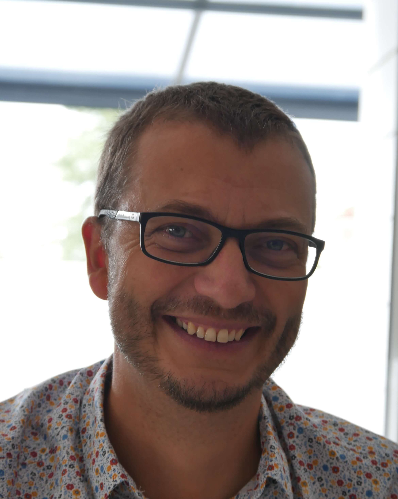

Disponible pour vos projets 2027
Consultant & formateur en intelligence artificielle
Transformation pédagogique et intégration stratégique de l'IA en entreprise.
J'accompagne les organisations et les professionnels dans l'adoption intelligente et responsable de l'IA, en transformant les défis technologiques en opportunités concrètes.

Ils m'ont fait confiance
- Cegos
- Lefebvre Dalloz
- Valeurs & Talents
- CSTB
- Pulsa Conseil
Pourquoi me choisir
Des formations qui allient expertise technique, pédagogie active et résultats mesurables.
Expertise reconnue
Évalué à 91,8/100 pour l'expertise par les participants Cegos en 2026 (100 répondants).
Approche sur mesure
Des parcours adaptés à vos enjeux, avec des cas concrets issus de votre métier.
Résultats tangibles
Augmentation de la productivité, automatisation des processus et adoption réussie de l'IA dans vos équipes.
Partenariats stratégiques
Collaboration avec des acteurs de la formation : Cegos, Lefebvre Dalloz Compétences, Valeurs & Talents, Pulsa Conseil.
Formations phares en IA
Des modules conçus pour déclencher l'action et ancrer les compétences.
01Productivité & efficacité
Utiliser l'IA pour gagner du temps et optimiser ses processus.
02Création de contenu
Générer des supports professionnels avec l'IA (textes, visuels, vidéos).
03Créativité & innovation
Stimuler l'innovation grâce aux outils d'IA générative.
04Veille stratégique
Automatiser et analyser sa veille avec l'IA.
05Transformation des métiers
Intégrer l'IA dans les missions de formateur ou de manager.
06Assistants IA personnalisés
Créer des outils sur mesure pour simplifier le quotidien.
Domaines d'expertise
Une triple compétence technique, pédagogique et stratégique.
Maîtrise technique
- IA générative & prompt engineering
- Utilisation experte de ChatGPT, Gemini, Claude, Microsoft Copilot et conception de prompts optimisés
- Diagnostic & cas d'usage
- Identification des opportunités IA adaptées à vos besoins métiers
- Déploiement d'assistants IA
- Intégration d'outils sur mesure et formation des équipes
- Automatisation no-code
- Création de workflows intelligents sans développement technique
- Analyse critique des résultats de l'IA
- Détection des biais, des hallucinations et évaluation de la qualité
- Stratégie & gouvernance IA
- Élaboration de cadres conformes aux enjeux réglementaires et éthiques
Pédagogie
- Ingénierie de formation
- Parcours certifiants, adaptés aux besoins et aux publics
- Animation multiforme
- Sessions en présentiel, distanciel ou hybride (de 3 h à 5 jours)
- Création d'agents IA pédagogiques
- Assistants conversationnels et outils métiers personnalisés
- Production de contenus multimédias
- Podcasts, vidéos, modules e-learning
- Évaluation & amélioration
- Mesure des acquis et analyse de la satisfaction
Accompagnement
- Acculturation des dirigeants
- Sensibilisation aux enjeux business et stratégiques de l'IA
- Chartes d'usage responsable
- Élaboration de cadres éthiques et pratiques
- Pilotage de projets IA
- Accompagnement des PME et ETI dans l'intégration de solutions IA
- Formation des formateurs
- Intégration de l'IA dans les pratiques pédagogiques
- Conformité légale & sécurité
- Application des réglementations pour une utilisation sécurisée
Approche
- Apprentissage par la pratique
- Exercices en situation réelle
- Cas concrets
- Travail sur les projets des participants
- Collaboration & transfert
- Approche interactive et partage de bonnes pratiques
- Supports réutilisables
- Prompts, modèles et outils clés en main
- Suivi post-formation
- Veille partagée et accompagnement continu
Ce qu'ils en disent
Verbatims de participants, anonymisés.
« J'ai tout aimé, Freddy a été très pertinent et s'est montré super disponible. »
« Très bonne connaissance du sujet, approche dynamique avec exercices et conseils. Démos vraiment agréables. »
« Restitution très claire et exhaustive. Merci Freddy ! »
« Cela donne envie d'aller encore plus loin. Belle introduction, ça donne envie d'explorer plus profondément. »
« Super formateur, tips sympa. Formation hyper intéressante avec découverte de nouveaux outils. »
Parcours professionnel
Plus de 15 ans d'expertise en certification, optimisation de processus et transformation digitale.
Consultant & formateur en intelligence artificielle
Nexellia
Conception et animation de formations sur mesure en IA pour des grands comptes, des organismes de formation (Cegos, Lefebvre Dalloz, Valeurs & Talents) et des cabinets de conseil (Pulsa Conseil).
- Acculturation à l'IA et automatisation des processus
- Stratégie et gouvernance, intégration responsable
- Développement de l'esprit critique et formation de formateurs
Chef de projet, référent certification
CSTB, pôle efficience des process opérationnels, Champs-sur-Marne
- Déploiement d'un outil de gestion de certification et accompagnement des équipes
- Optimisation des processus opérationnels et construction d'un reporting stratégique
Chef de projet certification
ASQUAL, Paris
- Gestion de 9 programmes de certification sous accréditation ISO/CEI 17065
- Génération d'un CA de 1,2 M€ et fidélisation de plus de 300 clients
- Révisions stratégiques des référentiels et digitalisation des processus
Ingénieur certification
AFNOR Certification, Saint-Denis
- Développement et gestion de portefeuilles clients dans le secteur des transports (CA de 500 k€)
- Pilotage d'une équipe de 10 auditeurs et mise en place de systèmes d'amélioration continue
Chargé de mission AMOA
AFNOR Certification, Saint-Denis
- Déploiement d'un logiciel de gestion de certification : coordination des équipes, tests, validation
- Formation de 60 opérationnels et accompagnement au changement
Publications
Articles sur l'IA appliquée, l'automatisation et l'optimisation des processus.
Le Labo de la productivité
Blog pour entrepreneurs et professionnels sur l'IA appliquée
Meilleure intelligence artificielle
Comparatif et guide des meilleures IA du marché
Stratégies pour de meilleurs résultats
Techniques avancées pour optimiser vos interactions avec l'IA
26 principes clés du prompt engineering
Guide complet pour maîtriser l'art du prompting
Formations & certifications
Un apprentissage continu pour rester à la pointe.
Formation continue
Formation initiale
Secteurs d'intervention
- Certification produits et services
- Génie civil et bâtiment
- Industrie
- Informatique
- Formation professionnelle
Travaillons ensemble
Vous voulez transformer vos équipes avec l'IA ? Contactez-moi pour discuter de votre projet.
Démarrer un projet- Téléphone
- +33 6 66 24 01 04
- linkedin.com/in/freddyfortin